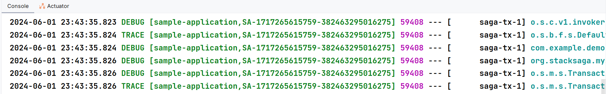

Updating Configuration Properties
We have all 4 utility services and also other 2 services called api-gateway and eureka service to configure. But except the order-service and api-gateway, other services are regular spring-cloud services. Therefore, we are not going to deep diving to them. You can see get the Configuration Properties through these links.
Configuration Properties for regular services.
| The above links are related to the default deployment approach. If you want to see how the applications are deployed by using docker-compose or kubernetes, reach these links. |
Let’s see how to configure The most important service called order-service.
application.yaml
services:
(1)
payment-service: http://payment-service
stock-service: http://stock-service
user-service: http://user-service
server:
port: 8081
eureka:
client:
serviceUrl:
(2)
defaultZone: http://localhost:8085/eureka/
instance:
hostname: localhost
(3)
instance-id: ${spring.application.name}:${random.uuid}
spring:
application:
(4)
name: order-service
datasource:
username: root
password: mafei
driver-class-name: com.mysql.cj.jdbc.Driver
url: jdbc:mysql://localhost:3306/stacksaga_place_order_demo_order_service?createDatabaseIfNotExist=true
liquibase:
(5)
enabled: false
(6)
stacksaga:
enable: true (7)
component-scan: org.example.aggregator (8)
app-release-version: 1.0.0 (9)
connect:
admin-urls:
- http://localhost:4444 (10)
admin-username: order-service-application-user (11)
admin-password: ykLO89Irx2Q6Cf2j (11)
datasource:
(12)
mysql:
jdbc-url: jdbc:mysql://localhost:3306/order-service?createDatabaseIfNotExist=true
username: root
password: mafei
driver-class-name: com.mysql.cj.jdbc.Driver
management:
endpoint:
env:
enabled: true
endpoints:
web:
exposure:
include: "*"
info:
app:
author: mafei
name: ${spring.application.name}
version: ${stacksaga.app-release-version}
logging:
pattern:
(13)
level: "%5p [${spring.application.name:},%X{aggregatorId:-}]"
level:
org:
stacksaga: debug| Due to this approach is the default environment, you use the default profile. When we move to other environments (docker-compose and kubernetes), different profiles will be created. |
Highlights
| 1 | We decided to obtain the service’s hosts that we use inside the order service from the configuration file. Because the host nam will be different with other environments, (spring profiles) like docker-compose and kubernetes. | ||
| 2 | Due to we use Eureka service discovery, we have provided the URL of the eureka server. | ||
| 3 | To identify the eureka client (the instance,) you have to provide a unique id for each instance. | ||
| 4 | it is most important because the service-user account should be equal the spring.application.name. |
||
| 5 | spring.liquibase.enabled Even if you haven’t added liquibase in your application, StackSaga uses liquibase internally.
Due to the liquibase dependency exists in the application spring tries to access the autoconfiguration.
Then you will get an error.
To avoid that exception, you have to disable it.
|
||
| 6 | The section that StackSaga configurations started. | ||
| 7 | It is not enough to add the StackSaga dependencies. To enable StackSaga, you have to enable StackSaga. | ||
| 8 | We have to provide the packages to StackSaga where the Aggregator class are stored.
In our example the package is org.example.aggregator.
If you have multiple locations, you can provide a list of packages. |
||
| 9 | This will be helpful to identify the metadata from the admin dashboard.
Because all the aggregator and executors metadata is saved under the app-release-version.
As an example, if you want to see what are the aggregators and executors that have been configured, you select the version and see them. |
||
| 10 | The admin URL that the admin-server is running on. If multiple admin-server instances are running, you can provide all the list of URLs. | ||
| 11 | The username and the password of the service-user that you created for this order-service. |
||
| 12 | You have to provide the datasource for the event-store that you use.
In this example we have used stacksaga-mysql-support dependency we have to provide the Mysql datasource configurations. |
||
| 13 | due to stacksaga adding the aggregator id in to Mapped Diagnostic Context (MDC) for monitoring the transaction log, you can update your logging pattern like this.
then you can identify easily all the logs regarding the specific transaction.
the output will be like this.

|
| If you are using spring tracing implementation, you can keep the log pattern like this |
%5p [${spring.application.name:},%X{traceId:-},%X{spanId:-},%X{aggregatorId:-}]